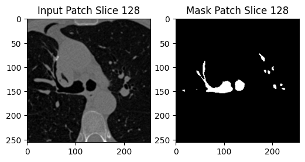

/home/tim/projects/3DUnet
UROP Fellowship Project - Molloi Lab, UCI
Built a 3D U-Net to automatically segment airways from CT scans, focusing on sub-2mm structures critical for early detection of lung diseases. Achieved a Dice coefficient of 0.94 on limited training data.
Technical Details
Architecture: 3D encoder-decoder with skip connections, 3×3×3 kernels.
Data: 25 volumes (285MB each), augmentation with cropping/patches.
Trachea Removal: Custom slice-based method to avoid large airway bias.
Results
Dice: 0.94
Presented at UROP symposium
GitHub: 3D-Unet-Airway
/home/tim/projects/3DUnet/full.gif

/home/tim/projects/3DUnet/patch.png
